Bath Collection
Tufted, Woven & Printed Shower Curtains — 100% Cotton, OEKO-TEX Certified, Private Label
Shower Curtains
Most shower curtains on shelf are printed PVC. Ours are 100% cotton cloth with a water-repellent finish — a category where a fabric curtain reads as an upgrade the moment a customer touches it, and where the pattern is tufted or woven into the cloth rather than printed onto film that cracks.
We have been manufacturing home textiles in India since 1965 and now run shower curtains as a full private-label programme: tufted relief, yarn-dyed stripe, screen print and digital print, in standard and made-to-order sizes, coordinated with our cotton tufted bath mat range so a buyer can land a complete bath set from one factory and one dye lot.
How They Are Made
Every technique below is done in-house, which matters when a design mixes two of them in one panel — a tufted stripe next to a printed motif has to be registered on the same table, not shipped between two vendors.
01
Chenille yarn tufted into the base cloth to build a raised pattern. Nothing to fade or peel, and it photographs as texture rather than as a flat graphic.
02
Stripe, check and crosshatch woven from pre-dyed yarn, so colour runs right through the cloth and holds through commercial laundering.
03
Screen printing with a hand-drawn character for artisanal ranges — crisp colour laydown that holds detail through commercial laundering.
04
Photographic and multi-colour artwork with no screen cost, which is what makes short-run and seasonal capsules viable on this category.
Current Range
Eleven designs from our current shower curtain programme — all 100% cotton. Every design below can be re-coloured, re-scaled or re-worked into your own artwork under private label.
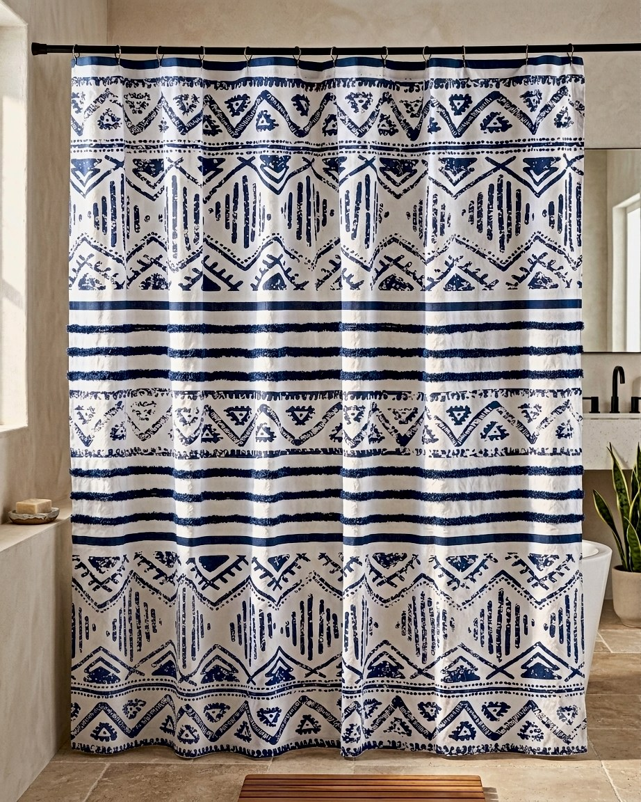
AH-SC-26-01
Banded layout with hand-drawn tribal motifs at head and hem and brushstroke stripes through the middle, printed with a hand-crafted character. The indigo-on-ivory palette is a proven seller across US and EU bath ranges.
Colourways: Indigo on ivory; custom colourways to order
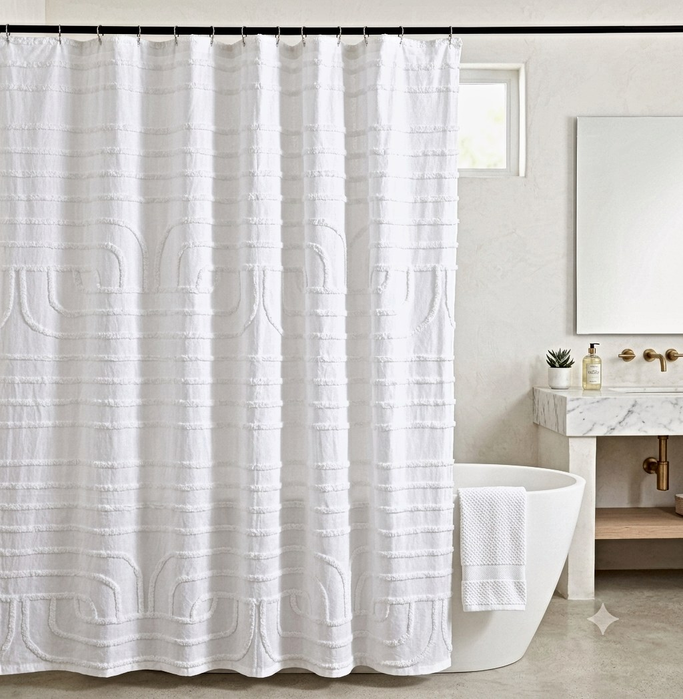
AH-SC-26-02
Tone-on-tone scrolled arches and ribbed banding raised out of a white cotton ground. All the interest is in the relief, so it photographs as texture — a spa-look piece for premium white bath programmes and hospitality.
Colourways: White on white; dyed to colour on request
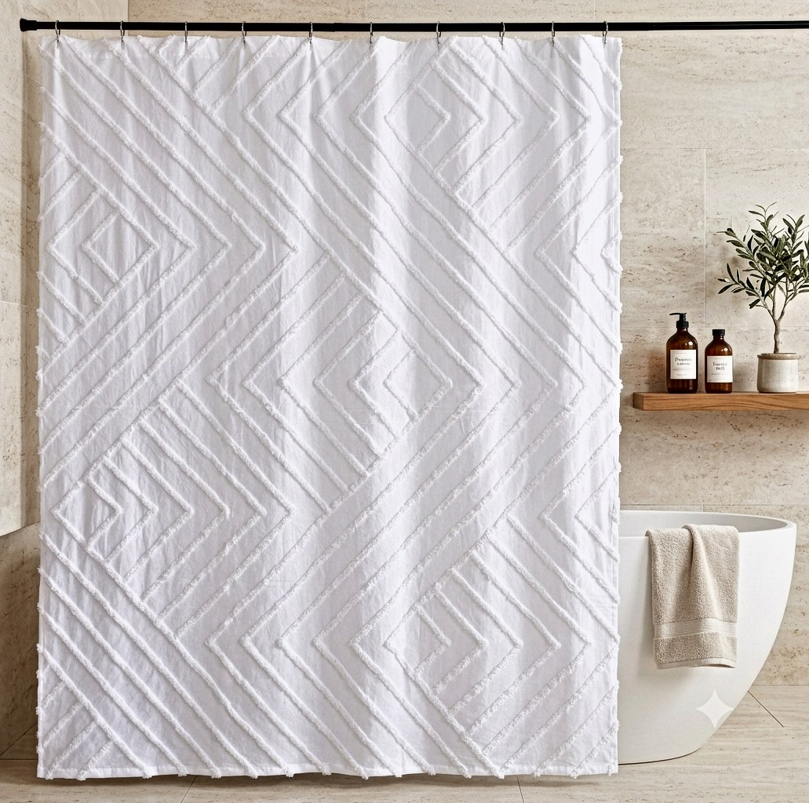
AH-SC-26-03
Concentric diamond and chevron relief on white cotton — a bolder geometric partner to the scroll design, sharing the same construction so the two run together as a range with one price point.
Colourways: White on white; dyed to colour on request
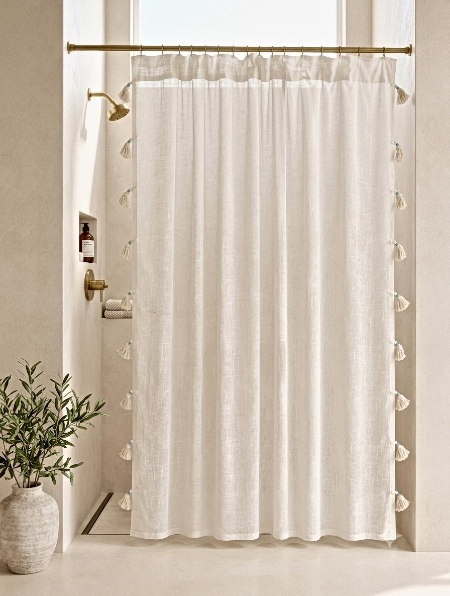
AH-SC-26-04
Clean ivory panel finished with a ladder of hand-knotted tassels down each side. A quiet design that leans on finish rather than print — suits natural, coastal and Scandinavian-styled ranges.
Colourways: Ivory / natural; custom colourways to order
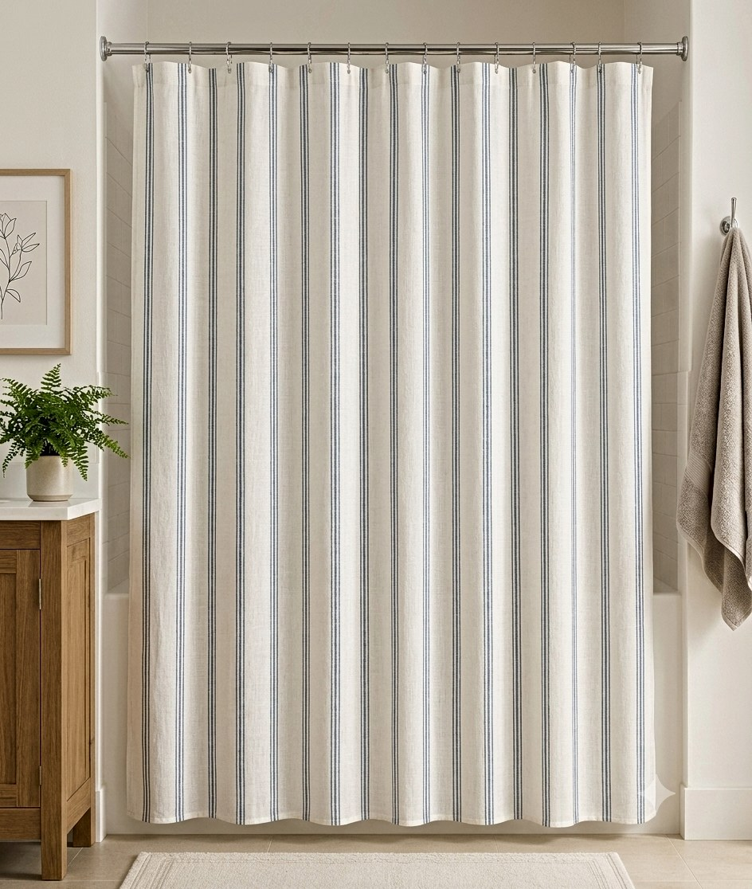
AH-SC-26-05
Fine multi-line ticking stripe running the full drop. A heritage pattern that sells steadily year after year, needs no pattern matching in cutting, and pairs naturally with plain towelling.
Colourways: Blue stripe on ivory; alternative stripe colours to order
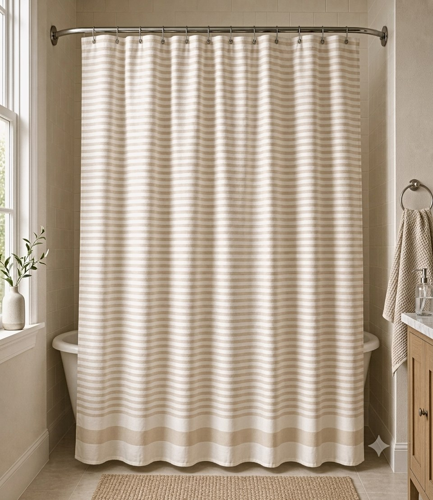
AH-SC-26-06
Tonal horizontal stripe in natural and ecru with a deeper banded hem. Horizontal lines visually widen a narrow bathroom, and the neutral palette drops into almost any retail bath story.
Colourways: Natural / ecru; alternative colourways to order
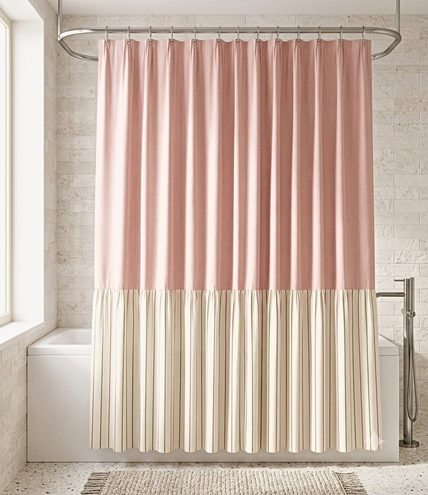
AH-SC-26-07
Solid blush upper panel over a knife-pleated striped skirt. The colourblock-plus-pleat structure gives a dressmaker finish that reads clearly on a thumbnail — strong for online-first retailers.
Colourways: Blush pink / ivory stripe; custom colourways to order
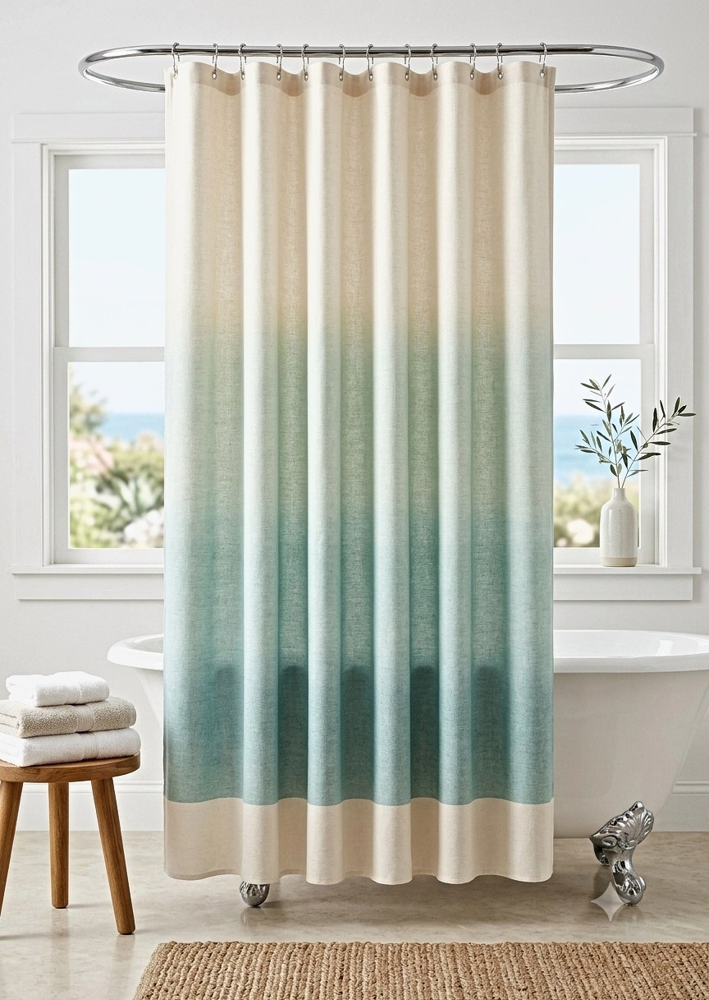
AH-SC-26-08
Dip-dye effect graduating from cream at the head through aqua to a deeper sea tone, finished with a solid hem band. Ombre remains one of the most-searched shower curtain looks, and the gradient can be re-run in any shade family.
Colourways: Aqua to cream ombre; custom shade runs to order
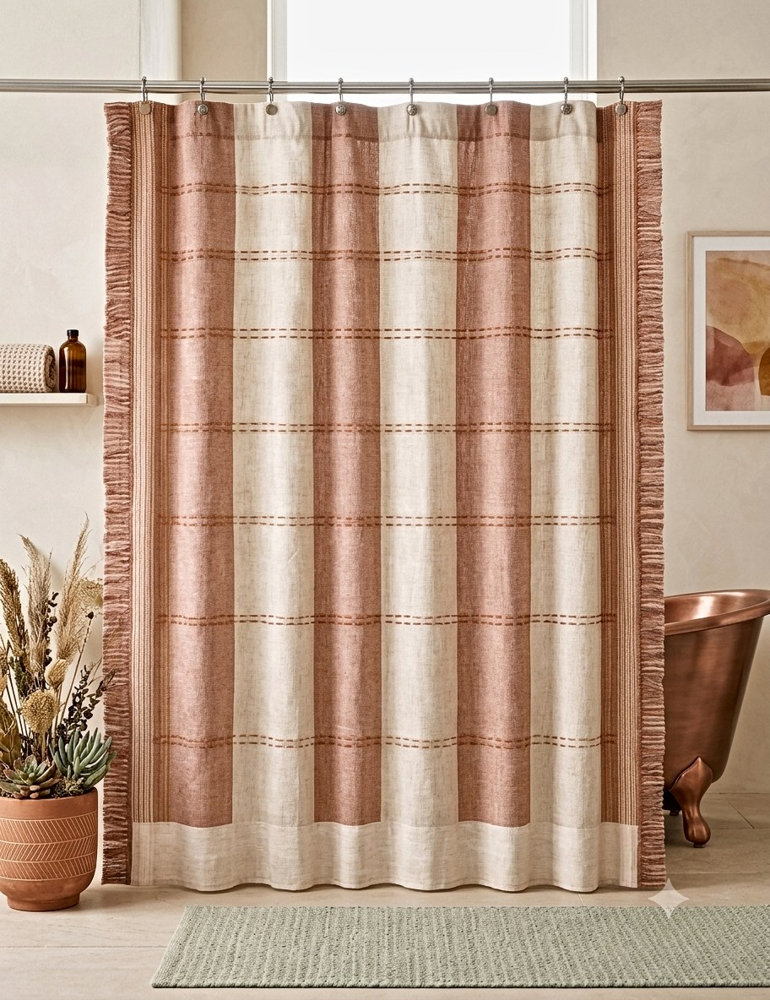
AH-SC-26-09
Broad clay panels with stitched running-line details and fringed vertical edges. Warm, artisanal and firmly on-trend with terracotta bathroom palettes — a natural companion to our tufted bathmats in the same tones.
Colourways: Clay / terracotta on ivory; custom colourways to order
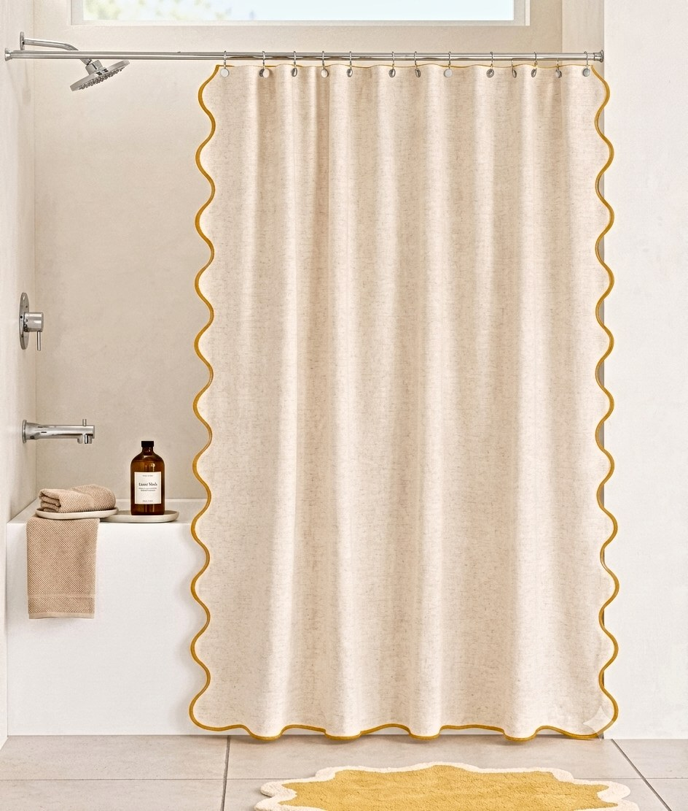
AH-SC-26-10
Textured cream panel bordered with a contrast scallop trim on three sides. A single line of colour does all the work, which keeps the piece flexible — the trim can be recoloured to match any bath collection.
Colourways: Cream with gold scallop; trim colour to order
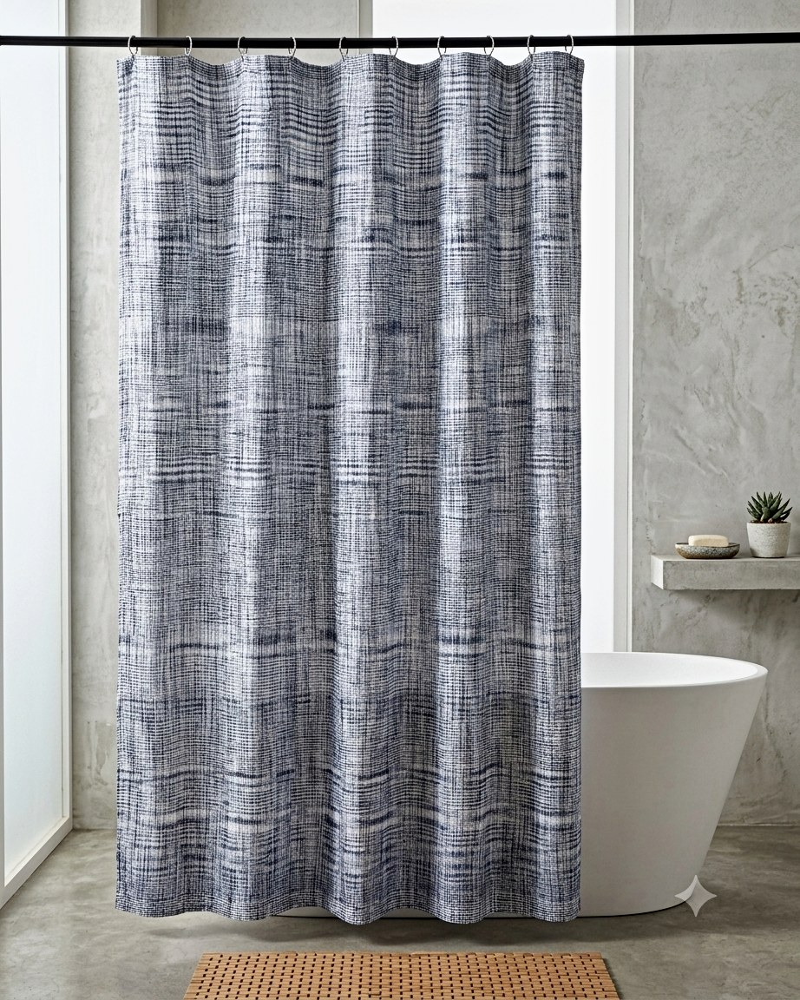
AH-SC-26-11
Dense crosshatch weave-effect in deep indigo with a subtle check underlying it — a slubby, hand-loomed look with an even all-over repeat that hides water marks well in daily use.
Colourways: Indigo / navy on ivory; alternative colourways to order
Technical
Standard sizes
180 x 180 cm and 180 x 200 cm. US imperial 72 x 72 in. and 72 x 84 in.
Made-to-order sizes
Extra-wide, extra-long, stall and shower-over-bath sizes cut to your spec.
Base fabric
100% cotton. GOTS organic cotton and GRS recycled blends on request.
Constructions
Tufted relief, woven stripe and check, screen print and digital print.
Finishes
Water-repellent finish as standard. Anti-microbial and flame-retardant finishes to order.
Header
Reinforced buttonhole header with rust-resistant eyelets as standard. Tab-top and grommet on request.
Certification
OEKO-TEX Standard 100. GOTS, GRS, BCI available. Sedex registered, ISO 9001:2015, ISO 14001, SA 8000, BSCI, CTPAT.
Order quantities
Low, flexible MOQs. Sampling runs available before production commitment.
Private label
Your artwork or ours, custom colourways, own labels, hangtags, polybag and retail packaging.
Coordination
Matched to our cotton tufted bath mats and kids' shaped bath mats using shared dye lots.
Coordinated Bath Programmes
A shower curtain on its own is a single low-value line. The same curtain with a matching bath mat becomes a set, and a set sells at a materially better basket value. Because both are made here from the same yarn dye lots, the whites actually match on shelf — which is the reason coordinated sets usually fail when the two items come from different factories.
Buyer Questions
We work to low, flexible MOQs and set them per design rather than applying one blanket number. Sampling runs come first, so you can approve hand-feel and colour before committing to production.
180 x 180 cm and 180 x 200 cm are standard, along with US imperial 72 x 72 in. and 72 x 84 in. Extra-wide, extra-long and stall sizes are made to order.
Yes. Our shower curtains are produced under OEKO-TEX Standard 100. GOTS organic cotton and GRS recycled content are available on request, and our facility is Sedex registered with ISO 9001:2015 and ISO 14001.
Yes. Shower curtains can be developed as a coordinated set with our cotton tufted bath mats and kids' shaped bath mats, sharing the same yarn dye lots so colour matches across the programme.
Yes. We do full private-label development — your artwork or ours, custom colourways, and your own labels, hangtags and retail packaging.
Our core programme is 100% cotton with a water-repellent finish, not PVC. Where a buyer requires a liner we source it separately rather than substituting plastic for fabric.
Tell us the sizes, constructions and price point you are working to and we will send hand samples of the closest pieces in our range, with an indicative quotation.
Explore More Collections
From bedding to bath, kitchen to floor coverings — every textile we make is woven, printed or hand-finished at our India facility under the same international certifications.
Soft Furnishings
Embroidered, tufted, woven and printed cushions for global retail and hospitality programmes.
Explore Cushions →Signature Collection
Quilts, bedspreads, duvet covers and sheet sets — GOTS organic and BCI cotton on request.
Explore Bedding →Kitchen & Dining
Tea towels, aprons, table runners, placemats and chair pads in cotton and linen blends.
Explore Kitchen →Soft Furnishings
Block print, bouclé, stripe and pom-pom throws woven in cotton and recycled blends.
Explore Throws →Floor & Seating
Pouffes and floor seating in cotton, recycled blends and mixed textiles.
Explore Pouffes →Country Programmes
Country-specific sourcing pages for buyers in our priority markets. Each page covers import logistics, port routing, certifications and MOQs for that market.
USA
Private-label bath mats and shower curtains shipped to Los Angeles / Long Beach and New York / Newark, with full OEKO-TEX, GOTS and GRS certification.
View USA Programme →UK
Private-label bath mats and shower curtains shipped to Felixstowe and Southampton, with full OEKO-TEX, GOTS and GRS certification.
View UK Programme →Germany
Private-label bath mats and shower curtains shipped to Hamburg and Bremerhaven, with full OEKO-TEX, GOTS and GRS certification.
View Germany Programme →France
Private-label bath mats and shower curtains shipped to Le Havre and Marseille-Fos, with full OEKO-TEX, GOTS and GRS certification.
View France Programme →Japan
Private-label bath mats and shower curtains shipped to Tokyo and Yokohama, with full OEKO-TEX, GOTS and GRS certification.
View Japan Programme →UAE
Private-label bath mats and shower curtains shipped to Jebel Ali (Dubai) and Khor Fakkan, with full OEKO-TEX, GOTS and GRS certification.
View UAE Programme →